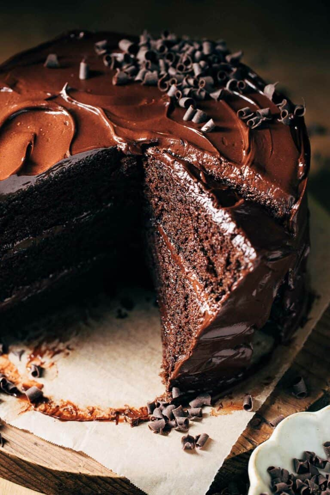
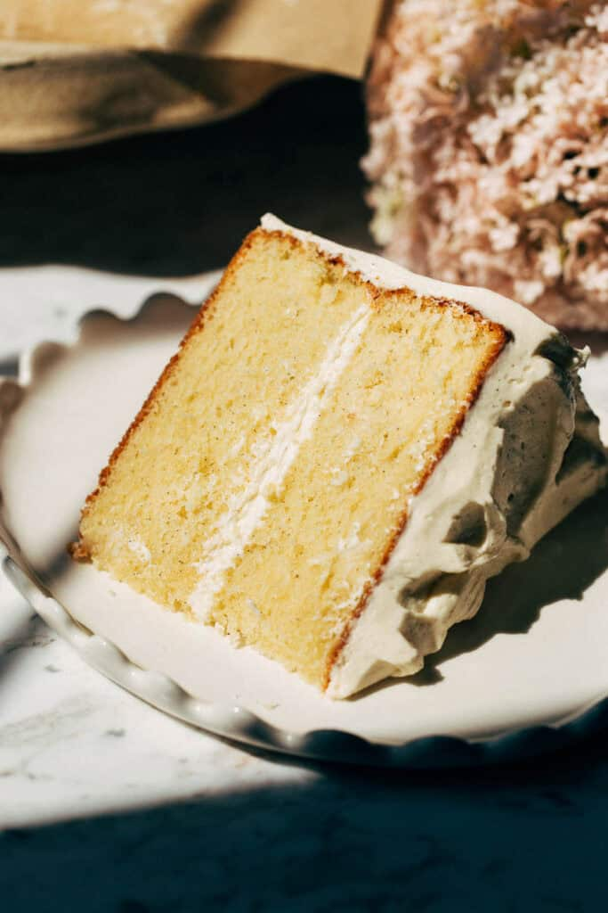
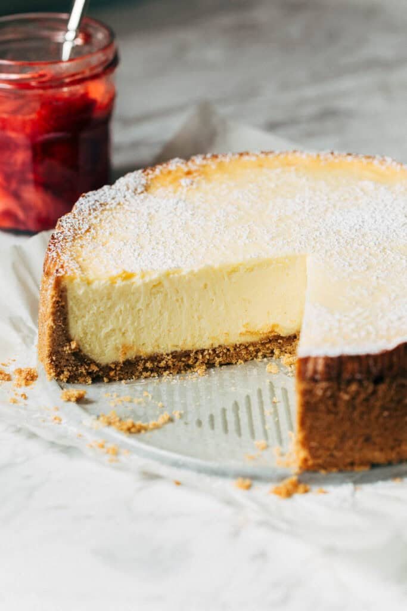

Chocolate Fudge Cake
This chocolate cake is so moist, fudgy, so chocolatey, so rich, and so delicious! Inspired by the Matilda cake, this recipe has three layers of moist chocolate cake covered in glossy chocolate fudge frosting.
Ingredients - Chocolate Cake
- 1 3/4 cups (230g) all-purpose flour
- 1/4 cup (30g) cornstarch
- 1 cup (100g) natural unsweetened cocoa powder
- 2 tsp baking soda
- 1 tsp baking powder
- 1/2 tsp kosher salt
- 1 cup (200g) granulated sugar
- 1 cup (205g) packed dark brown sugar
- 1/2 cup (108g) vegetable oil
- 1 cup (230g) mayonnaise
- 3 large eggs + 1 egg yolk
- 1/2 cup (128g) whole milk
- 1 tbsp white distilled vinegar
- 2 tsp vanilla extract
- 1 cup (240g) hot coffee
Chocolate Fudge Frosting
- 2 cups (450g) unsalted butter
- 1 1/2 cups (165g) powdered sugar
- 3 tbsp light corn syrup
- 1 tsp vanilla extract
- Pinch of kosher salt
- 3/4 cup (180g) warm water
- 3/4 cup (75g) cocoa powder
- 10 oz dark chocolate chips
Instructions
- Preheat the oven to 350°F and prepare three 8-inch cake pans.
- Whisk together the flour, cornstarch, cocoa powder, baking soda, baking powder, and salt.
- Mix the milk with vinegar and vanilla.
- Whisk the sugars, oil, mayonnaise, eggs, and egg yolk together.
- Mix in the milk mixture.
- Add half of the dry ingredients.
- Add the hot coffee and remaining dry ingredients.
- Divide the batter between the three pans.
- Bake for 30–35 minutes.
- Allow the cakes to cool completely before frosting.
Frosting and Assembly
- Beat the butter until smooth.
- Mix in powdered sugar, corn syrup, vanilla, and salt.
- Whisk warm water and cocoa powder together and add them to the frosting.
- Mix in the melted chocolate.
- Refrigerate the frosting for about 45 minutes.
- Stack the cake layers with frosting between them.
- Refrigerate the assembled cake for about 20 minutes.
- Cover the outside with frosting.
- Slice and enjoy!

Best Vanilla Cake
Truly the best vanilla cake you can make at home! It is plush and bouncy with an incredibly moist consistency.
The Reverse Creaming Method
Much of the magic comes from the reverse creaming method.
Instead of starting by creaming butter and sugar, the dry ingredients and sugar are combined first.
The fat, including butter and oil, is then mixed into the dry ingredients. The fat coats the flour and slows gluten formation, creating a delicate cake.
The wet ingredients are combined separately and then added to the dry mixture.
Reverse creaming creates a tighter and bouncy crumb compared with the traditional creaming method.
The provided recipe information explains the reverse creaming technique but does not include a complete ingredient list or baking instructions.

New York Style Cheesecake
This New York Cheesecake is dense, creamy, crack-free, and absolutely delicious. It is baked low and slow for an incredible texture.
Strawberry Topping
- 1 pound fresh strawberries
- 1/4 cup (50g) granulated sugar
- 1 tsp cornstarch
- Juice of 1/2 lemon
- 1 tbsp honey
Graham Cracker Crust
- 2 cups (280g) graham cracker crumbs
- 1/3 cup (70g) granulated sugar
- 1/2 tsp cinnamon
- 1/8 tsp kosher salt
- 1/2 cup (110g) unsalted butter, melted
New York Cheesecake
- 4 × 8 oz blocks full-fat cream cheese
- 1 1/2 cups (300g) granulated sugar
- 3 tbsp cornstarch
- 4 large eggs + 1 egg yolk
- 2 tsp lemon juice
- 2 tsp vanilla extract
- 1 cup (250g) sour cream
Special Notes
GLUTEN FREE: Substitute gluten-free graham crackers and reduce the butter to 6 tablespoons.
HOW TO STORE: Store in the refrigerator after chilling. It will keep for up to 10 days.
FOR FREEZING: The cheesecake can be frozen for up to 3 months.